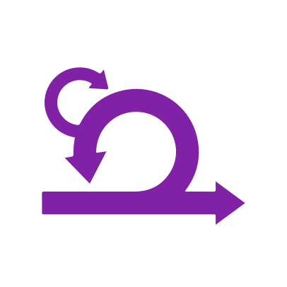
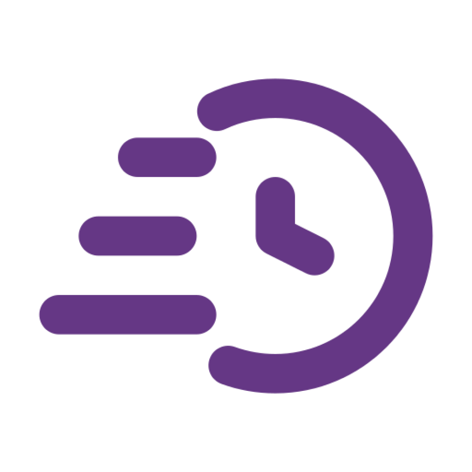

Scrum
É um método ágil para gerenciar, desenvolver e sustentar produtos complexos, com a premissa deconseguir produzir mais em equipes menores e auto-organizáveis.
Geralmente o Scrum é usado em trabalhos com produtos de software, mas também pode ser empregado em várias outrasáreas como educação, pesquisa, marketing e RH.
No método Scrum, as tomadas de decisões devem ser feitas com base no conhecimento adiquirido por experiências anteriores e na observação, e visa se concentrar sempre no que é essencial para a conclusão de um trabalho.
O Scrum é um framework que trabalha com abordagens incrementais e iterativas, ou seja, o resultado do trabalho é entregue por partes, fazendo entregas cada vez mais incrementadas de forma produtiva e com o maior valor possível.
Agilidade
Ser ágil é responder de forma rápida e consciente a mudanças de situação. A cultura de desenvolvimento ágil surgiu como um tratado formalizado por um grupo de desenvolvedores, e foi chamado de Manifesto Ágil, declarando princípios para desenvolver software, apesar do método ser utilizado para outros negócios atualmente.
No Manifesto Ágil, são apresentados 12 princípios:
- Satisfação por entregas antecipadas e contínuas
- Aceitar mudanças mesmo no fim do projeto
- Entregas de valor e com frequência
- As partes interessadas trabalham juntas
- Equipe motivada
- Comunicação “cara-a-cara”
- Progresso é medido por funcionamento
- Ritmo de trabalho constante e sustentável
- Excelência contínua aumenta a agilidade
- Simplicidade é essencial
- Equipes auto-organizadas têm mais valor
- Avaliar desempenho e identificar possíveis melhorias

Pilares do Scrum
Transparência
A transparência é algo fundamental no Scrum, então todos os processos devem estar visíveis a todos os integrantes no processo de criação. Para esse processo ocorrer, o time deve estar com todas as definições em mente, como a Definição de Pronto(Definition of Done), que deve ser definida e compartilhada com o grupo para um entendimento mútuo.
Inspeção
É um método de controle empírico de processos, ou seja, testando e validando as teorias e hipóteses do projeto, ele deve ser inspecionado regularmente, seja para detectar problemas ou verificar o andamento do projeto.
Quando a inspeção detectar algum problema ou melhoria para o processo, é necessário que se façam adaptações rápidas para manter ou elevar a produtividade do time e a qualidade do produto.
O Scrum possui Eventos para essa adaptação:
- Daily Scrum
- Sprint Planning Meeting
- Sprint Review
- Sprint Retrospective
As adaptações devem ser feitas sem qualquer nível hierárquico, para isso é necessária transparência entre os membros do time.